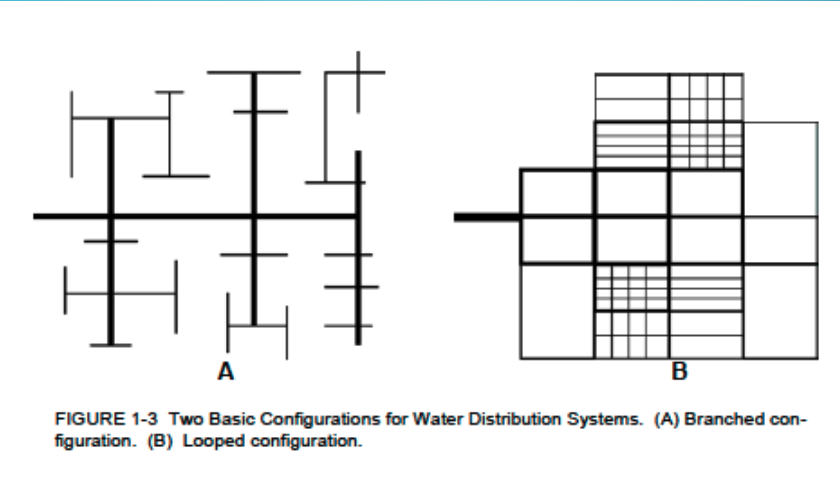
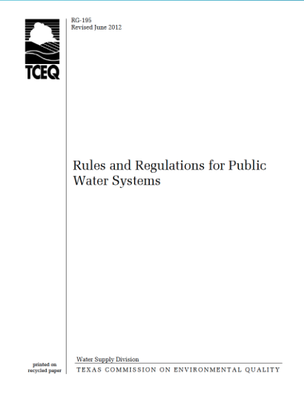
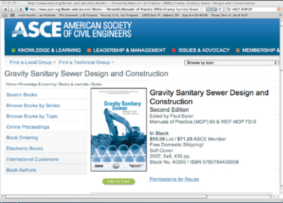

Drinking Water Design Guidelines¶
Placeholder
Design Concepts¶
Note
Design generalities are paraphrased from [] and [].
Design is the management of constraints.
Non-negotiable constraints are dictated by laws of physics, chemistry (and to some extent mankind); examples of these are: water flows downhill unless power (lift station) and money (capital cost to build, operation cost to pay for electricity to run pumps) are applied; Chemical disinfection residual will decay over time unless replenished; this constraint encourages using treated water relatively quickly.
Negotiable constraints are the design variables that can be adjusted to satisfy the non- negotiable constraints and the desired system performance; the main components of this category are money to pay for things, time to build (and operate), aesthetics (pipe alignment/channel geometry); system performance under various anticipated conditions.
The water system designer’s goal is to satisfy a need (some level of performance) by manipulating the negotiable constraints.
Analytical tools (models) are used to test the design before committing to an actual build (presumably so that full-scale experiment fails are avoided).
Design guidelines are encapsulated in
regulatory documents,
design manuals,
professional literature,
and manufacturer’s literature
These guidelines collectively represent centuries of observation and experimentation (and a lot of failures); the value is that they generally work, and reduce commercial risk for routine water system components.
Four basic questions in water distribution design are:
How much water will be used?
Where are the water supply locations?
Where are the water consumption locations?
What is the water use as a function of time?
How Much Water?¶
This question is related to the demand for water.
When designing new systems, calculating demands is not a straightforward process. The designer needs to know the expected demands, possible fire demands, and future expansions.
There are some publications that provide average demands for residential,commercial facilities, and production/industrial facilities.
Note
Finding/building a modern database of such information would be a good data science project (ENGR 1330) :::
Different demands that need to be accounted for:
Customer demand: Average use needed to meet non-emergency needs.
Fire flow demand: The computed system capacity required for ensuring minimum fire protection while maintaining a minimum working pressure in the system. This demand is often stipulated in municipal design guidelines either explicitly or by virtue of fire hydrant location and spacing and flowrate/hydrant
Ultimate expansion of the system (forecast the future)
Water distribution systems convey water from a source to a customer.
Ground water: Series of municipal wells usually requiring chemical treatment, at least to the extent of chlorinating (disinfecting).
Surface water: Drawn from lakes or rivers just below the surface. Ocean-desalination plants on or near coastal regions.
Precipitation: Large municipal reservoirs collecting rain runoff and snowmelt (rainwater harvesting).
Transmission and Distribution Mains¶
Transmission lines are conduits that carry large volumes of water, great distances, such as between a treatment plant and local storage facilities.
Distribution lines are smaller pipes including valves, hydrants, fittings, and appurtenances, that deliver treated potable water to the customers.
Distribution System Types¶

LOOPED SYSTEM FEATURES¶
Advantages:
Fluid velocities are lower, reducing head losses, resulting in greater capacity.
Main breaks can be isolated to minimize loss of service to customers.
Fire protection is greater due to greater capacity and ability to isolate breaks.
Looped systems usually provide better residual chlorine content due to inline mixing and fewer dead ends.
Disadvantages:
Looped systems generally cost more because there are pipes that become inadvertently redundant in order to create the loops.
BRANCHED SYSTEM FEATURES¶
Advantages:
Lower costs: Avoiding construction of pipes and appurtenances just to create a looped system reduces the cost.
In smaller rural communities, branched systems may be the only type that is feasible, logistically and monetarily.
Disadvantages:
Main breaks take all downstream customers out of service.
Branched systems cause poor chlorine residuals in low demand areas and may require periodic flushing of hydrants in order to pull chlorinated water into the system.
Velocities are faster, head losses greater and capacity reduced especially during high demand.
Fire protection is at risk due to inability to isolate a break.
REGULATORY GUIDANCE DOCUMENTS¶
Regulatory guidance documents are a principal tool in system design, along with the designers creativity, and the owners access to right-of-way.
The U.S. EPA (Environmental Protection Agency) writes federal regulations for construction, maintenance, treatment and operation of potable water facilities.
State’s EPAs(or equivalents) are charged with regulating the standards and permitting. States may write more stringent regulations if they do not violate the intent of the federal code. The various documents are precise, but teduous.
RG-195 Texas Drinking Water Systems Guidelines¶

A collection of relevant guidelines for use in Texas are contained in the document http://54.243.252.9/ce-3372-webroot/3-Readings/Texas-RG-195/rg-195.pdf
Representative Regulations¶
Visit each jurisdiction’s website for current design guidance! The contents change from time to time - some the copies referenced here are over a decade old; they are fine for use in this class but not for actual engineering design. As examples consider:
Here are a few Texas cities as examples
City of Houston manual
City of Lubbock manual
City of San Marcos manual. I specify this one for your homework assignments, because it is not too long, so things are easy for you to find
Use the manual for the locality of your project!
Professional Literature¶

For unusual situations the designer will likely have to visit the professional literature for guidance
Order of preference for a designer will be:
a manual of practice,
vendor literature,
and finally the academic literature.
A manual of practice or even vendor literature is preferred over the academic literature simply because of a perception that the technologies are proven in these documents (proven in the litigation sense).
Project Layout¶
Notice that most of the manuals spend considerable space explaining how drawings are to be submitted for approval. The actual layout is flexible (within right-of-way) and up to the hydraulic engineer to some extent.
A designer would typically use some version of the following protocol to design a new water distribution system:
Set up the distribution system grid on the area plan. Aerial photo plots to scale are excellent tools
Allocate average daily demands at nodes;
Determine the peak factors;
Estimate fire demands;
Project demands for future expansion of the service areas.
A node is considered a junction point in a system where a demand can be attributed/assigned.
Models use the nodes to calculate the system demands, pressures, water quality, and velocity. These items are usually prescribed in guidance documents with minimum/maximum acceptable values.
Models are used to test the design before commiting to a real-world build.
The practical design of a water system without the use of water distribution modeling software is possible, but requires a logical, economical approach of laying out the system (and some roll your own calculations).
Professional quality software is inexpensive (free) so there is really no good reason to design a system without using a hydraulic model - hence the guidance documents almost expect a model.
Commercial value-added software is usually far easier for a designer to use and integrated into other design tools, but is computationally about the same as free software
A designer should use commercial software when it is available to them, the time savings can more than justify the license costs.
Existing Data¶
The designer will need reliable sources to determine demands.
Obviously a discussion with the owners is critical but the actual quantities will have to be calculated for a design situation.
A land use plan or zoning map will help to determine the future demands.
The demands need to be compiled and situated on an area map.
Once complete this map can help determine node locations and pipe diameter for the system schematic
PIPE DIAMETER
The selected pipe diameters affect system hydraulics.
The trench is the biggest cost, and the hydraulics should be used to set adequate pipe sizes.
Designers need to determine the proper pipe size in order to meet peak demands and fire protection while maintaining an adequate dynamic pressure in the system.
PRESSURE ZONES
Pressure zones are set up to regulate pressure in locations where large grade changes will create too much pressure at the lower end of the system and not enough pressure in the higher ends.
More than an 80 feet differential will require a pressure zone.
In areas of even larger grade differentials, such as hill country or mountain communities, several consecutive pressure zones may be needed.
The following equations can assist in determining the HGLs for the pressure zones.
\(HGL_{min}\) = Highest Elevation + (2.31x Minimum Working Pressure)
\(HGL_{max}\) = Lowest Elevation + (2.31x Maximum Working Pressure)
def hglmin(pressure,elevation):
hglmin = elevation+2.31*pressure
return(hglmin)
def hglmax(pressure,elevation):
hglmax = elevation+2.31*pressure
return(hglmax)
pmin = 30 # pressure in psi (about 2 atm)
pmax = 90 # pressure in psi (about 6 atm)
emin = 5 # low elevation in feet
emax = 95 # high elevation in feet
print(hglmin(pmin,emax))
print(hglmax(pmax,emin))
164.3
212.9
JUNCTION LOCATION AND ELEVATION
Location of junctions will depend more upon the planned layout of the project site than the affect they will have upon the hydraulic model.
In general grid distribution node locations have little affect upon the overall model since there are customer demands along the real system between nodes. Node locations and their elevations are more relative in large transmission mains.
Nodes generally should be placed at the lowest elevation of a looped system where the grades uctuate signicantly.
MATERIALS
The pipe materials will effect system performance.
Water distribution systems are built from ductile iron pipe, ABS, PVC, and HDPE.
All are good materials for specific applications and various fittings to join different materials are available.
Different jurisdictions may specify specific materials; the designer needs to read the guidance document for the specific locale.
Readings¶
TCEQ (2012) Rules and Regulations for Public Water Systems, Publication RG-195 http://54.243.252.9/ce-3372-webroot/3-Readings/Texas-RG-195/rg-195.pdf
Krueger D. W., and Smitha C. W. (2012) Infrastructure Design Manual, City of Houston, Department of Public Works and Engineering http://54.243.252.9/ce-3372-webroot/3-Readings/HoustonDesignManual/Houston.idm.pdf
City of Lubbock (2018) Minimum Design Standards and Specifications, City of Lubbock Engineering. http://54.243.252.9/ce-3372-webroot/3-Readings/LubbockTexasDesignManual/LubbockTexasDesignManual.pdf
City of San Marcos, Texas (2019) WATER DISTRIBUTION SYSTEM DESIGN CRITERIA TECHNICAL MANUALhttp://54.243.252.9/ce-3372-webroot/3-Readings/SanMarcosTexasDesignManual/SanMarcosTexasDesignManual.pdf